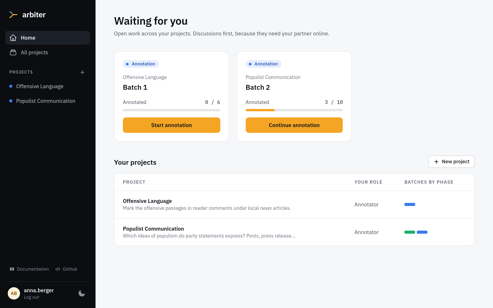
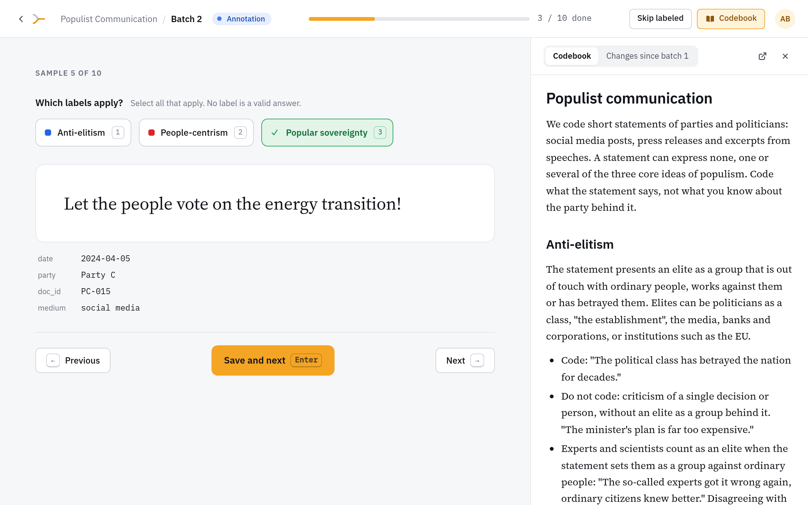
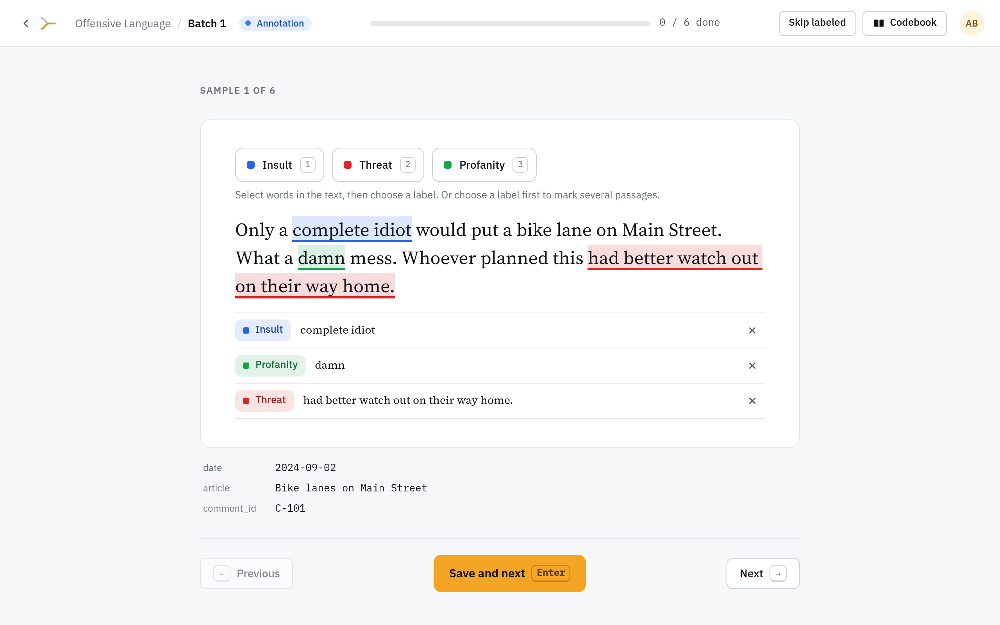
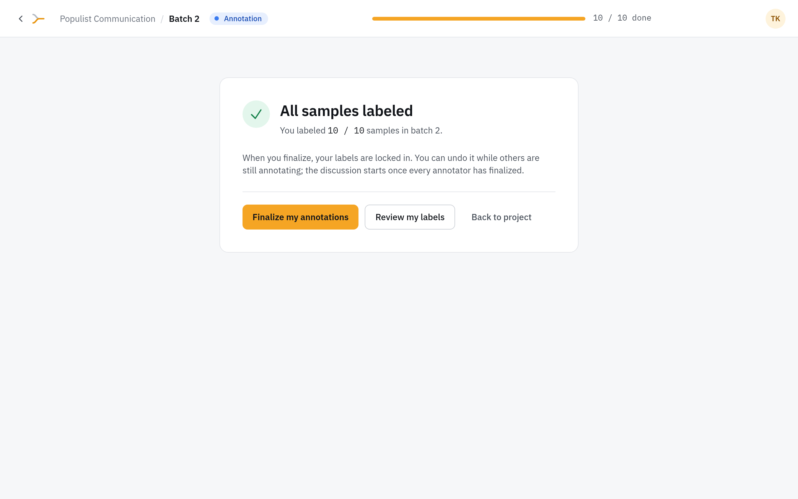

Annotate
In the annotation phase you label every text of a batch on your own. The other annotators do the same, and nobody sees anyone else’s labels until the phase is over. Where your labels differ, you will discuss the text afterwards.
Find your work
After signing in, the home page shows under Waiting for you everything you can work on right now, across all your projects: batches to annotate, discussions to join. Click Start annotation, or Continue annotation if you have begun already.


The home page of an annotator with work waiting in two projects.
The page of a project, reached from the sidebar, lists your batches in it with their phase and your progress.
Label a text
The annotation page shows one text at a time. Above it you see the labels of the project, each with its shortcut key. Below it, if the project lead has switched this on, further information about the text, such as its source or date.
What you do with a text depends on the kind of project.
Labels for the whole text
Choose every label that applies to the text, by clicking it or pressing its key. Click or press it again to remove it. Choosing no label is a valid answer: it says that none applies. Then click Save and next or press Enter.


A text with the label Popular sovereignty chosen, and the codebook open next to it.
Spans in the text
Mark the passages that a label applies to:
Select the words with the mouse, or click a single word. A passage always covers whole words.
Choose the label: click it, or press its key.
To mark several passages with the same label, choose the label first: every selection then gets it right away. Press Esc or click the label again to stop.
The passages you have marked are listed below the text. Remove one with ×, or by marking the same passage with the same label again. Passages may overlap; two passages with the same label that overlap or touch become one. A text without any passage is a valid answer as well. Click Save and next or press Enter when you are done.


Three passages marked, each with its label.
Move between texts
Previous and Next (or the arrow keys ← and →) go to the neighbouring text without saving. A text you have saved says Labeled above it; to correct it, change the labels and save again.
The bar at the top shows how many texts you have labeled. With Skip labeled switched on, Previous and Next only stop at texts you have not labeled yet.
Codebook in the top bar opens the codebook next to the text. If it has changed since your previous batch, its tab Changes since batch … shows what is new, see Codebook changes.
Keyboard shortcuts
Shortcuts do not work while you type in a text field.
Key |
What it does |
|---|---|
1, 2, … |
choose or remove the label with this key (the keys are set by the project lead) |
Enter |
save and go to the next text |
← / → |
previous / next text, without saving |
Esc |
spans only: stop marking with the chosen label, or drop a selection without a label |
Finalize
Once you have labeled every text, the annotation page tells you so and offers Finalize. Before you finalize, you can still go through your labels with Review my labels and change any of them.


All texts labeled: finalize, or review your labels first.
Finalize my annotations locks your labels. As long as other annotators are still working, Undo finalize unlocks them again. When the last annotator finalizes, the batch moves on, and you get a notification:
If you all agree on every text, the batch is finished.
Otherwise it goes to the discussion of the texts you labeled differently.